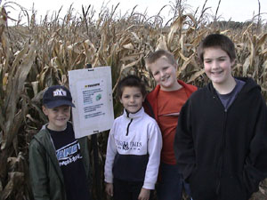
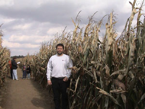
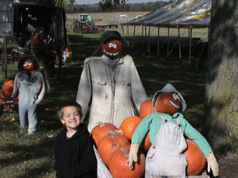
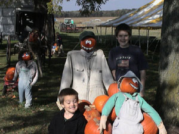
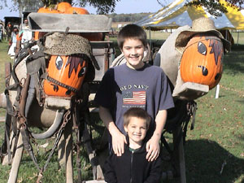

 Thursday when the boys got home from school, we gave them their first clue. It was "ohio maze." Being the tech savvy family that  we are, I expected them to head straight for the internet and do a search on ohio maze. This would hopefully lead them to interesting websites about ohio (remember one of the goals of the mystery trips was to learn more about Ohio). But hopefully they wouldn't be able to guess with just the first clue. I had tried this myself earlier in the day, and came up with quite a list of places we could be going.
It wasn't 5 minutes, and Bradford asks, "Are we going to Ramseyer Farms?" He was correct. How
did he do that? Try it yourself. Pick your favorite search engine and search for "ohio maze." Was Ramseyer Farms in the to 10 of
your search list? Here are the results
at Lycos . Ramseyer Farms isn't there. I guess my problem was, I didn't know which search engine they would use. For
here are the results for Yahoo! Ramseyer Farms ends up being the very
first result!
February 5, 2003 - When we tried this last October Lycos didn't list Ramseyer Farms at all, but now I see they are at the top of the search!
 The Ohio Maze, at Ramseyer Farms seemed to be the perfect mystery trip. Not only would it be a fun trip, it would also be educational. At the farm, they have carved a maze in the shape of Ohio out of the corn field. Throughout the maze, there were signs detailing events or people at that location in Ohio. So, while wandering through the corn field, you also learned some Ohio history.
We left at about 9:00 am. We picked up a friend of ours (the extra boy in some of the pictures) and headed for Wooster... sort of.  Remember the part about having the boys give directions? They had a hard time leaving town! We crossed town about twice, before they could make up their minds on which way to get out of town. I finally stopped the van, and had them close their eyes and try to visualize the streets in town. Which one went past Big Bear? Which one went past Dad's work? Which way to Grandmother's house? Once we decided we needed to be on the street that went down the hill to the river and past the park, we headed out of town.
We arrived in Wooster at about 11:30 am and began searching for a place to have a picnic. The night before, I had the boys print a map of Wooster and mark some of their parks so we would have a place to have lunch. After trying about three locations (The first three  locations we tried were school yards with playgrounds only.), we finally found a park with a picnic table. It was also the park with the skate park. Since I am on the Parks and Recreation advisory board, and we are getting ready to build a skate park, I took some pictures of the skate park in Wooster to share with the others on the board.
After lunch, we went out to the farm and explored Ohio. I am not sure about the boys, but I had a great time. I learned some new things about ohio that I didn't know before. For example, Thomas Edison is from Ohio. The state of Ohio loves to fight North Carolina over the Wright Brothers (they were born in Dayton, but flew at Kitty Hawk) and somehow Edison never gets mentioned!
When the boys were thoroughly bored with the maze, we left for home. On the way home we stopped at a pumpkin farm to look at the large squash. We also stopped for dinner at Taco Bell.
{kind=link}
{kind=link}
{kind=link}
{kind=link}
{kind=link}